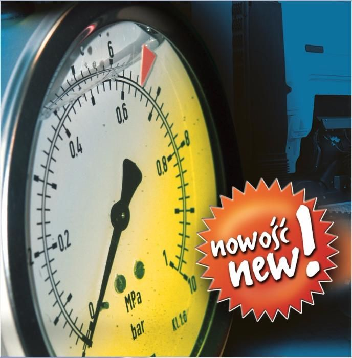

Kontrola obciążenia osi w samochodzie ciężarowym /naczepie.
Prawdziwym problemem dla kierowców pojazdów ciężarowych, szczególnie materiałów sypkich, lecz nie tylko, jest takie przyjęcie ładunku i jego rozmieszczenie na skrzyni załadunkowej, żeby wartość obciążenia osi pojazdu nie przekraczała dopuszczalnych norm.
Obecnie te wartości wynoszą: Dla osi napędowej pojedynczej = 10,5 T. Dla osi naczepy 3-osiowej = 8 T. Najprostszym sposobem rozwiązującym ten problem jest zamontowanie Zegara Obciążenia Osi, którego zmierzone ciśnienie w poduszce zawieszenia przekłada się proporcjonalnie na wartość obciążenia osi. Zegar mocuje się do ramy pojazdu i podłącza się w przewód powietrzny do poduszki zawieszenia.
Zegar obciążenia osi.
Zegar obciążenia osi to manometr mierzący ciśnienie w poduszce zawieszenia, które zmienia się wraz ze zmianą załadowania pojazdu. Kierowca ma możliwość ,obserwując zegar obciążenia osi, wpływać na rozmieszczenie ładunku, żeby nie przekroczyć maksymalnego nacisku dla tej osi.
Skalowanie "Zegara Obciążenia Osi":
Nowo zamontowany zegar musi mieć wyliczony punkt krytyczny ciśnienia w poduszce, którego nie można przekroczyć podczas załadunku pojazdu.
W tym celu musimy dokonać kontrolnego ważenia pojazdu. Podczas ważenia zapisujemy wskazanie wagi(np.N=5ton) i wskazanie manometru (np. p=3 bary). Jeżeli ten zegar jest podłączony pod miech naczepy 3-osiowej, gdzie dopuszczalny maksymalny nacisk osi na podłoże wynosi Nmax=8 ton, to z proporcji wyliczamy ciśnienie temu naciskowi odpowiadające:
pmax=(3bary x 8 ton)/(5 ton)=4,8 bara
Uwaga: ta maksymalna wartość ciśnienia w poduszce jest zapisana w programie modulatora EBS naczepy lub w danych EBS samochodu . Możemy ją odczytać przy pomocy komputera, lub z tabliczki znamionowej pojazdu.